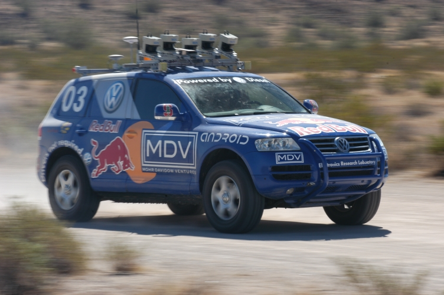
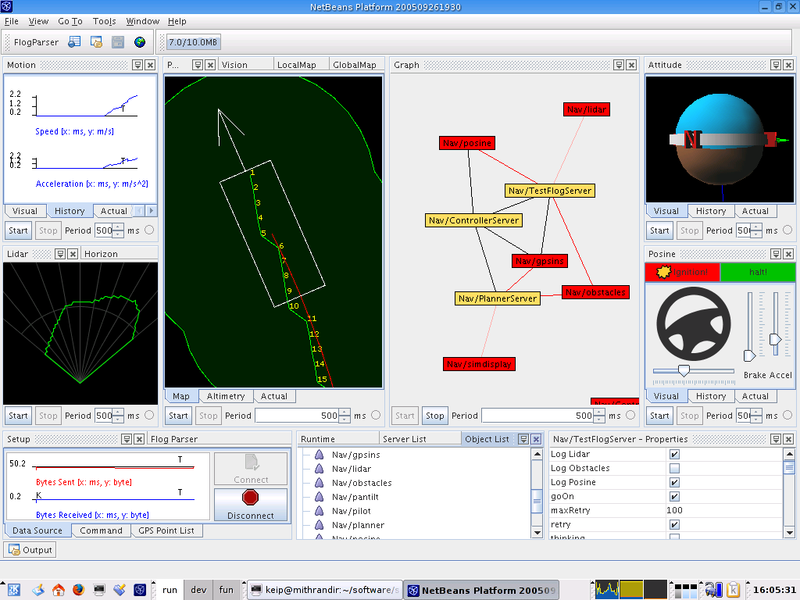
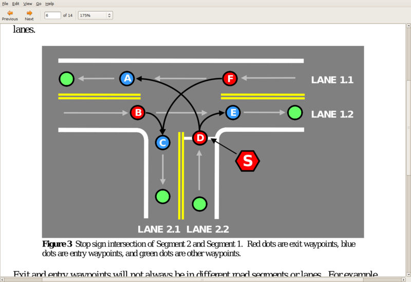

The hardest computing challenges we face are man-made: language, roads and spam. Take, for instance, robot-driven cars. We could do this without a vision system, and modify every road on the planet by adding driving rails or other guides for robot-driven cars, but it is much cheaper and safer to build software for cars to travel on roads as they exist today — a chaotic mess.
At the annual American Association for the Advancement of Science (AAAS) conference in February 2007, the “consensus ” among the scientists was that we will have driverless cars by 2030. This prediction is meaningless because those working on the problem are not working together, just as those working on the best chess software are not working together. Furthermore, as American cancer researcher Sidney Farber has said, “Any man who predicts a date for discovery is no longer a scientist.”
Today, Lexus has a car that can parallel park itself, but its vision system needs only a very vague idea of the obstacles around it to accomplish this task. The challenge of building a robot-driven car rests in creating a vision system that makes sense of painted lines, freeway signs, and the other obstacles on the road, including dirtbags not following “the rules”.
The Defense Advanced Research Projects Agency (DARPA), which unlike Al Gore, really invented the Internet, has sponsored several contests to build robot-driven vehicles:

Stanley, Stanford University's winning entry for the 2005 challenge. It might not run over a Stop sign, but it wouldn't know to stop.
Like the parallel parking scenario, the DARPA Grand Challenge of 2004 required only a simple vision system. Competing cars traveled over a mostly empty dirt road and were given a detailed series of map points. Even so, many of the cars didn't finish, or perform confidently. There is an expression in engineering called “garbage in, garbage out”; as such, if a car sees “poorly”, it is helpless.
What was disappointing about the first challenge was that an enormous amount of software was written to operate these vehicles yet none of it has been released (especially the vision system) for others to review, comment on, improve, etc. I visited Stanford's Stanley website and could find no link to the source code, or even information such as the programming language it was written in.
Some might wonder why people should work together in a contest, but if all the cars used rubber tires, Intel processors and the Linux kernel, would you say they were not competing? It is a race, with the fastest hardware and driving style winning in the end. By working together on some of the software, engineers can focus more on the hardware, which is the fun stuff.
The following is a description of the computer vision pipeline required to successfully operate a driverless car. Whereas Stanley's entire software team involved only 12 part-time people, the vision software alone is a problem so complicated it will take an effort comparable in complexity to the Linux kernel to build it:
Image acquisition: Converting sensor inputs from 2 or more cameras, radar, heat, etc. into a 3-dimensional image sequence
Pre-processing: Noise reduction, contrast enhancement
Feature extraction: lines, edges, shape, motion
Detection/Segmentation: Find portions of the images that need further analysis (highway signs)
High-level processing: Data verification, text recognition, object analysis and categorization
The 5 stages of an image recognition pipeline.
A lot of software needs to be written in support of such a system:

The vision pipeline is the hardest part of creating a robot-driven car, but even such diagnostic software is non-trivial.
In 2007, there was a new DARPA Urban challenge. This is a sample of the information given to the contestants:

It is easier and safer to program a car to recognize a Stop sign than it is to point out the location of all of them.
Constructing a vision pipeline that can drive in an urban environment presents a much harder software problem. However, if you look at the vision requirements needed to solve the Urban Challenge, it is clear that recognizing shapes and motion is all that is required, and those are the same requirements as had existed in the 2004 challenge! But even in the 2007 contest, there was no more sharing than in the previous contest.
Once we develop the vision system, everything else is technically easy. Video games contain computer-controlled drivers that can race you while shooting and swearing at you. Their trick is that they already have detailed information about all of the objects in their simulated world.
After we've built a vision system, there are still many fun challenges to tackle: preparing for Congressional hearings to argue that these cars should have a speed limit controlled by the computer, or telling your car not to drive aggressively and spill your champagne, or testing and building confidence in such a system.2
Eventually, our roads will get smart. Once we have traffic information, we can have computers efficiently route vehicles around any congestion. A study found that traffic jams cost the average large city $1 billion dollars a year.
No organization today, including Microsoft and Google, contains hundreds of computer vision experts. Do you think GM would be gutsy enough to fund a team of 100 vision experts even if they thought they could corner this market?
There are enough people worldwide working on the vision problem right now. If we could pool their efforts into one codebase, written in a modern programming language, we could have robot-driven cars in five years. It is not a matter of invention, it is a matter of engineering. Perhaps the world simply needs a Linus Torvalds of computer vision to step up and lead these efforts.